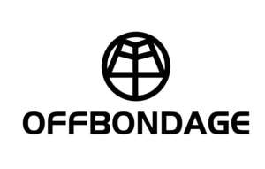

Trade Mark Journal No.2026/006 6 February 2026
UK00004328029 22 January 2026 (6,9,11,12,18,21,25,35)

- Class 6
- Doors of metal; Metal bells; Metal bicycle locks; Metal door trim; Locks of metal; Metal locksets; Step stools of metal; Metal storage sheds; Metal tent pegs; Safety deposit boxes.
- Class 9
- Batteries; Headphones; Telescopes; Bicycle helmets; Bicycle speedometers; Calculating machines; Electrical and electronic burglar alarms; Counters; Safety helmets; Eyepieces.
- Class 11
- Lamps; Air purifying apparatus; Baking ovens; Barbecues; Grills; Bicycle lights; Bicycle reflectors; Hanging lamps; Motorcycle lights; Reflectors for vehicles; Automobile headlights; Vehicle taillights; Lamps for directional signals of automobiles; Vehicle lights; Vehicle brake lights; Reading lights; Vehicle headlights.
- Class 12
- Bicycle bells; Bicycle chains; Bicycle cranks; Bicycle frames; Bicycle mudguards; Bicycle pedals; Bicycle saddles; Bicycle tires; Bicycle wheels; Folding bicycles; Panniers adapted for bicycles; Bike bags; Baskets adapted for bicycles; Rack trunk bags for bicycles; Bags for bicycles; Luggage carriers for bicycles; Inner tubes for bicycle tyres; Rack trunk bags for motorcycles.
- Class 18
- Alpenstocks; Umbrellas; Athletic bags; Bags for carrying pets; Bags for sports; Hiking bags; Imitation leather; Rucksacks for mountaineers; Trunks being luggage; Waist bags; Canvas bags; Travel bags; Luggage bags; Tool bags, empty; Backpacks; Reusable shopping bags; Satchels; Tote bags.
- Class 21
- Dinnerware; Flasks; Mugs; Cooking pans; Saucepans; Baking dishes; Electrical toothbrushes; Brushes for pets; Plastic cups; Wine openers.
- Class 25
- Gloves; Hats; Scarves; Socks; Tracksuits; Athletic tights; Cycling shoes; Down suits; Knit tops; Ski balaclavas; Electrically heated clothing.
- Class 35
- Commercial administration of the licensing of the goods and services of others; provision of an online marketplace for buyers and sellers of goods and services; Marketing; Advertising; publicity; presentation of goods on communication media, for retail purposes; sales promotion for others; promotion of goods through influencers; pay per click advertising; bill-posting; providing business information via a website; providing commercial information and advice for consumers in the choice of products and services.
Yiwu Huayi Sports Goods Co., Ltd.
Representative: Yayipcom